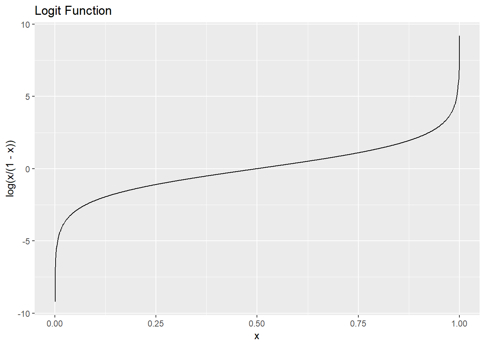
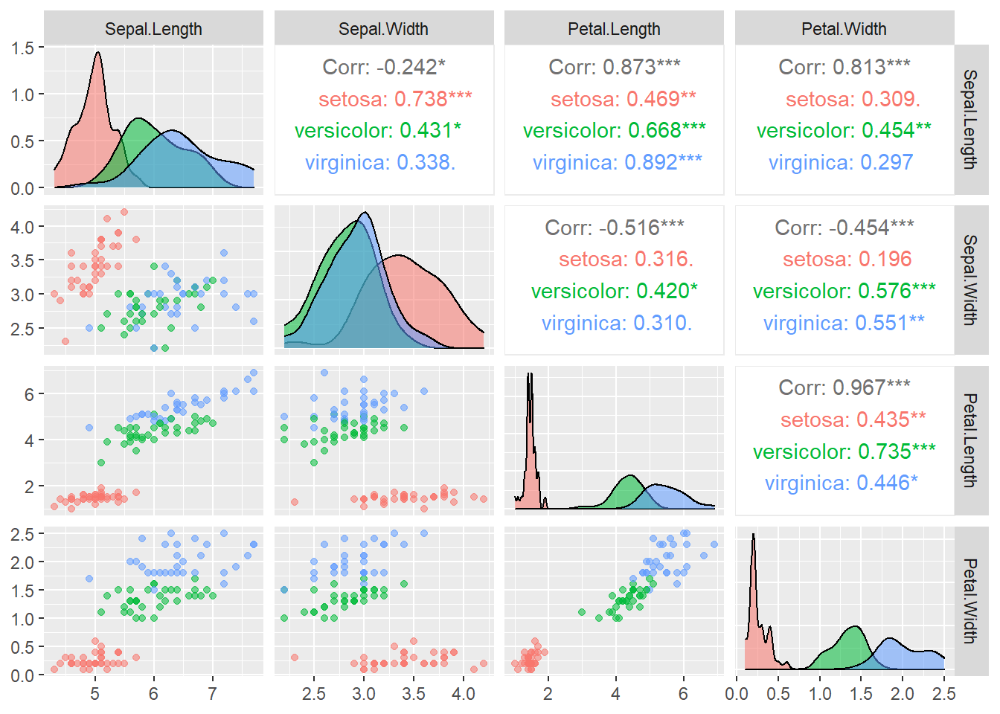

Chapter 14 Logistic Regression Model
We have already seen logistic regression model in Chapter 9. Logistic regression is one of the most common methods for classification.
Suppose we observe \(\{(x_i, y_i):i=1,\ldots,n\}\), where \(y_i\) is a binary variable and \(x_i\) is a vector of covariates (including the intercept \(1\)). In logistic regression we assume that \[\begin{equation*} P(Y_i = 1|x_i, \beta) = \frac{e^{x^T_i \beta}}{1+e^{x^T_i \beta}} = \frac{ e^{\beta_0 + \beta_1 x_{i1} +\ldots +\beta_p x_{ip}}}{1 + e^{\beta_0 + \beta_1 x_{i1} +\ldots +\beta_p x_{ip}}}. \end{equation*}\] Since \(Y_i\) takes only two values, \[\begin{equation*} P(Y_i = 0|x_i, \beta) = \frac{1}{1+e^{x^T_i \beta}}. \end{equation*}\] We can use one single formula for \(y = 0, 1\): \[\begin{equation*} P(Y_i = y|x_i, \beta) = \frac{e^{(x^T_i \beta)y_i}}{1+e^{x^T_i \beta}}. \end{equation*}\] The likelihood function (conditional on x) is \[\begin{equation*} L(\beta|y_1,\ldots,y_n, x_1,\ldots,x_n) = \prod^n_{i=1} P(Y_i = y_i|x_i, \beta) = \prod^n_{i=1} \frac{e^{(x^T_i \beta)y_i}}{1+e^{x^T_i \beta}}. \end{equation*}\] The MLE of \(\beta\) is obtained by maximizing \(L(\beta|y,x)\) with respect to \(\beta\). We usually maximize the natural logarithm of the likelihood function instead of the likelihood function, which is easier. The log likelihood function is \[\begin{equation*} \sum^n_{i=1} \bigg( (x^T_i \beta) y_i - \log(1+e^{x^T_i \beta}) \bigg), \end{equation*}\] which can be maximized numerically in computer.
Odds
In statistics, odds of an event are defined as the ratio of the probability that the event will occur to the probability that the event will not occur. For example, if the event of interest is getting a \(6\) when you roll a die. The odds are \((1/6):(5/6) = 1:5\).
In the logistic regression model, the odds of \(Y=1\) given \(x\) are \[\begin{equation*} \frac{P(Y=1|x)}{P(Y=0|x)} = e^{\beta^T x}. \end{equation*}\]
Interpretation of \(\beta_j\): changing the value of \(x_j\) by one unit, while keeping other predictors fixed, multiplies the odds by \(e^{\beta_j}\).
Log odds
The log odds is the log of the odds.
In the logistic regression model, the log odds of \(Y=1\) given \(x\) are \[\begin{equation*} \log \frac{P(Y=1|x)}{P(Y=0|x)} = \beta^T x. \end{equation*}\]
Interpretation of \(\beta_j\): changing the value of \(x_j\) by one unit, while keeping other predictors fixed, changes the log odds by \(\beta_j\).
logit function
The logit function, \(\text{logit}:(0, 1) \rightarrow \mathbb{R}\), is defined as \[\begin{equation*} \text{logit}(p) = \log \frac{p}{1-p}. \end{equation*}\]

logistic function
The standard logistic function is defined as \[\begin{equation*} f(x) = \frac{1}{1+e^{-x}} = \frac{e^x}{1+e^x}. \end{equation*}\] It is the inverse of the logit function.

Example
The package mlbench contains some artificial and real-world machine learning benchmark problems (datasets). See https://cran.r-project.org/web/packages/mlbench/mlbench.pdf
We will use the dataset PimaIndiansDiabetes2 from mlbench.
Details:
pregnant: Number of times pregnantglucose: Plasma glucose concentration (glucose tolerance test)pressure: Diastolic blood pressure (mm Hg)triceps: Triceps skin fold thickness (mm)insulin: 2-Hour serum insulin (mu U/ml)mass: Body mass index (weight in kg/(height in m)^2)pedigree: Diabetes pedigree functionage: Age (years)diabetes: Class variable (test for diabetes)
data(PimaIndiansDiabetes2)
PimaIndiansDiabetes2 <- na.omit(PimaIndiansDiabetes2)
# Split the data into training and test set
set.seed(1)
random_index <- sample(nrow(PimaIndiansDiabetes2),
size = nrow(PimaIndiansDiabetes2) * 0.7)
train_data <- PimaIndiansDiabetes2[random_index, ]
test_data <- PimaIndiansDiabetes2[-random_index, ]Simple model:
Fitting a logistic regression model is similar to fitting a linear regression model. In addition to the formula and the data, we use
glm()and specifyfamily = binomial.predict(fit_simple, test_data, type = "response"): give us the estimated probabilityifelse(prob > 0.5, "pos", "neg"): classify the case asposwhen the probability is greater than \(0.5\)
# Estimation
fit_simple <- glm(diabetes ~ glucose, data = train_data, family = binomial)
# Summary
summary(fit_simple)
##
## Call:
## glm(formula = diabetes ~ glucose, family = binomial, data = train_data)
##
## Deviance Residuals:
## Min 1Q Median 3Q Max
## -2.2089 -0.7182 -0.4459 0.7004 2.4145
##
## Coefficients:
## Estimate Std. Error z value Pr(>|z|)
## (Intercept) -6.419871 0.774032 -8.294 < 2e-16 ***
## glucose 0.044509 0.005775 7.707 1.29e-14 ***
## ---
## Signif. codes: 0 '***' 0.001 '**' 0.01 '*' 0.05 '.' 0.1 ' ' 1
##
## (Dispersion parameter for binomial family taken to be 1)
##
## Null deviance: 348.35 on 273 degrees of freedom
## Residual deviance: 262.14 on 272 degrees of freedom
## AIC: 266.14
##
## Number of Fisher Scoring iterations: 4
# Prediction
prob <- predict(fit_simple, test_data, type = "response")
predicted_class <- ifelse(prob > 0.5, "pos", "neg")
# Confusion Matrix
table(predicted_class, test_data$diabetes)
##
## predicted_class neg pos
## neg 71 23
## pos 8 16
# Accuracy
mean(predicted_class == test_data$diabetes)
## [1] 0.7372881For this simple model, the accuracy is \(73.7\%\).
Now, we will use all the covariates.
# Estimation
fit <- glm(diabetes ~ ., data = train_data, family = binomial)
# Summary
summary(fit)
##
## Call:
## glm(formula = diabetes ~ ., family = binomial, data = train_data)
##
## Deviance Residuals:
## Min 1Q Median 3Q Max
## -2.6139 -0.6178 -0.3523 0.5804 2.1311
##
## Coefficients:
## Estimate Std. Error z value Pr(>|z|)
## (Intercept) -1.130e+01 1.558e+00 -7.250 4.18e-13 ***
## pregnant 2.511e-02 6.582e-02 0.381 0.7028
## glucose 4.038e-02 7.028e-03 5.745 9.17e-09 ***
## pressure 1.368e-02 1.562e-02 0.876 0.3811
## triceps 1.381e-02 2.151e-02 0.642 0.5209
## insulin -9.559e-04 1.808e-03 -0.529 0.5970
## mass 7.334e-02 3.586e-02 2.045 0.0408 *
## pedigree 8.706e-01 5.093e-01 1.709 0.0874 .
## age 3.612e-02 2.323e-02 1.555 0.1200
## ---
## Signif. codes: 0 '***' 0.001 '**' 0.01 '*' 0.05 '.' 0.1 ' ' 1
##
## (Dispersion parameter for binomial family taken to be 1)
##
## Null deviance: 348.35 on 273 degrees of freedom
## Residual deviance: 233.54 on 265 degrees of freedom
## AIC: 251.54
##
## Number of Fisher Scoring iterations: 5
# Prediction
prob <- predict(fit, test_data, type = "response")
predicted_class <- ifelse(prob > 0.5, "pos", "neg")
# Confusion Matrix
table(predicted_class, test_data$diabetes)
##
## predicted_class neg pos
## neg 69 15
## pos 10 24
# Accuracy
mean(predicted_class == test_data$diabetes)
## [1] 0.7881356The accuracy is \(78.8\%\).